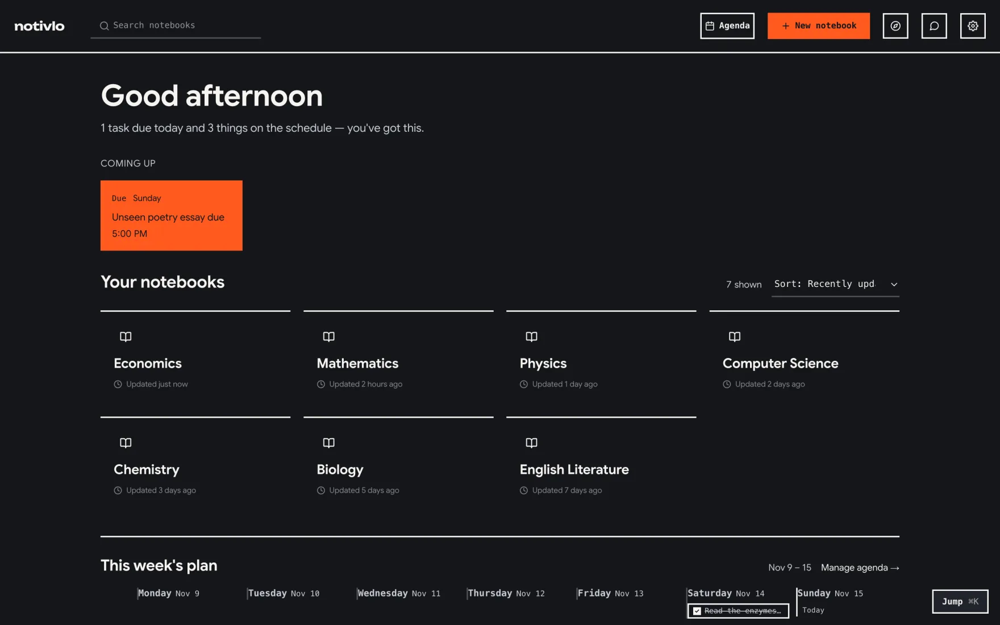

Early beta — looking for testers
Every subject, every deadline,

Every subject, every deadline,
in one quiet place.
A notebook for each class, a week built around what is actually due, and a home page that opens on the next thing to do.
Nothing to install. An account is three fields — no card, no ads, no feed.
